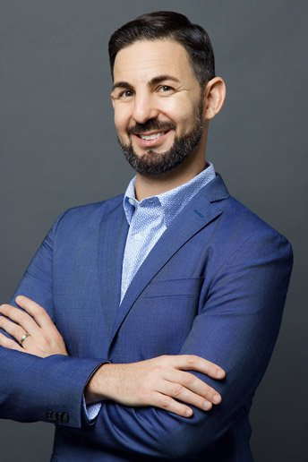
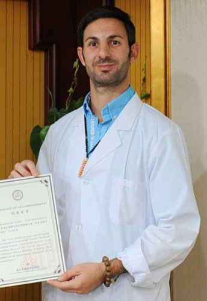
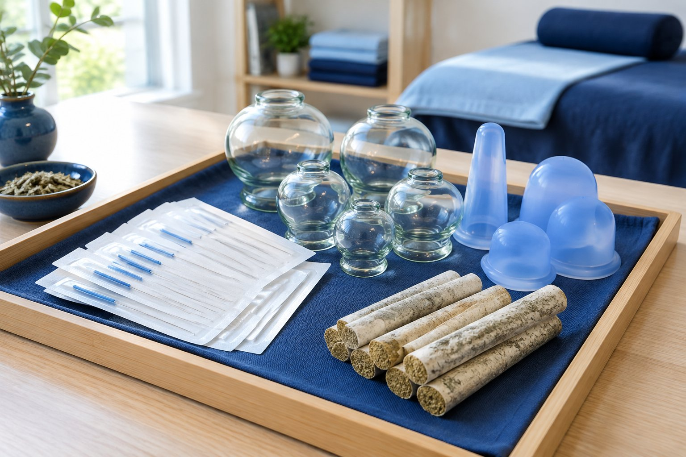

Integrative Medicine US · Tamarac and Coconut Creek
People usually ask me the same thing on their first visit: how can a needle thinner than a hair change the way a stubborn shoulder or a wound up nervous system feels? This page is my answer, written the way I explain it at the treatment table, from what you will notice in the room to what researchers are learning about why it may help.

Before a single needle goes in, we talk. I want to know where it hurts, when it started, what makes it better or worse, how you sleep, how you digest and what you have already tried. Then I examine you in two ways at once. One is orthopedic: how the joint moves, which muscles are guarding, where the tendon or ligament is tender. The other is a classical Chinese medicine assessment of your constitution, the overall pattern of your body.
From there, the plan is yours alone. Two people with the same sore knee rarely get the same treatment, because their bodies are not the same.

Meet your practitioner
I am a Doctor of Acupuncture and Oriental Medicine and the founder of Integrative Medicine US. My training spans the United States and China, including time at the Shaolin Temple, and my practice blends classical Chinese medicine with orthopedic and functional medicine assessment. I have also studied functional medicine, blood chemistry and functional endocrinology, and I have taught qigong and tai chi for more than twenty years. Every plan I write starts with listening, because the details of your life usually explain more than any single test.
Needles are the center of the work, but they are not the only tool. Depending on what your body needs, a session may include:
Many patients pair needling with cupping or gua sha for broad, tight areas, and some add Chinese herbal formulas chosen for their constitution.

What you do at home matters as much as what happens on the table. I often send patients home with stretches chosen for their body, breathing exercises, short meditations and simple Eastern food therapy guidance. For people who want a daily practice, I teach medical qigong, gentle movement and breath work that I have practiced and taught for more than two decades.
When the picture is bigger than one joint, such as fatigue, hormones or digestion, we may build a fuller plan with functional medicine.
Integrative Medicine US cares for patients across north Broward County. Our Coral Springs clinic sits at 811 N. Coral Ridge Dr., our Tamarac clinic at 8197 N. University Dr., Suite 2, and our Coconut Creek clinic at 3720 Coconut Creek Pkwy, Suite B. Many patients come to us from Parkland, Margate, Coral Springs, Tamarac and Coconut Creek, and each clinic offers the same approach: a careful first conversation, a hands on exam and a plan built for one person. Call to ask which location and schedule suits you best, or request a free consultation online and our team will reach out. When you call, have a short list of your main concerns, your medications and any recent lab work handy. Our team will explain what the first visit includes, how long to plan for and what to wear, so you can arrive relaxed and ready.
Learn more
For readers who want the details: the research, the history and the reasoning behind how we work.
Every needle creates a tiny micro puncture, far smaller than a scratch. Your innate immune system, the part that reacts first, notices it. In response, the body tends to send help to the area: more blood flow, white blood cells that clear debris, cytokines that coordinate repair and growth factors that tell tissue to rebuild.
I describe it as a reminder. A joint or muscle that has been irritated for months can slip into a stuck pattern where the body stops paying attention. The needle invites circulation and resources back.
Even the smallest puncture starts the same sequence your body uses for any wound. Platelets and clotting factors gather, and they carry the body's own growth factors and healing hormones. Nothing is added from outside. Acupuncture simply encourages your system to use chemistry it already makes, right where it is needed.
Inflammation is part of healing, but when it lingers it keeps tissue sore. Research has found that acupuncture can influence inflammatory signaling, and studies suggest it may help shift the balance toward a calmer state. Exactly how is still being studied, and it likely involves the immune, nervous and circulatory systems together. In practice, I track how each patient responds and adjust, because results vary from person to person.
In 1965, Ronald Melzack and Patrick Wall proposed in the journal Science that the spinal cord has a kind of gate controlling how many pain signals reach the brain (Melzack and Wall, 1965). Pressure, touch and similar sensations can help close that gate. It is why rubbing a bumped elbow helps.
Acupuncture appears to work with this gate by sending new, non painful signals through the nervous system. Over repeated sessions, many patients find their nervous system becomes less reactive.
Ligaments, tendons and cartilage have very little blood supply of their own, which is one reason they can stay irritated for a long time. Careful needling in or near these tissues creates micro wounds that prompt the body to bring repair resources to places it may have been neglecting.
Muscle fibers can tighten into knots that squeeze nearby small blood vessels and keep an area tender. A needle placed into a knot can help the fibers let go. You may feel a brief twitch or deep ache that fades quickly, and afterward the muscle often feels softer.
Functional MRI shows which areas of the brain become more or less active. Research using fMRI has found acupuncture is associated with measurable changes in regions involved in pain, mood and the stress response. Research also suggests acupuncture encourages release of the body's own endorphins, dopamine, serotonin and oxytocin. That is part of why so many people feel deeply calm on the table, and some fall asleep.
Classical Chinese medicine speaks of qi, meridians, yin and yang. Researchers are now revisiting those maps with modern tools. I use both languages every day, and they often point the same way.
Put together, these effects help explain the analgesic, pain relieving response many people notice: gating pain signals, releasing natural pain relievers, calming inflammation and relaxing tight tissue. Just as important, treatment can encourage the rest and digest side of the nervous system, where the body does its best repair work. Patients often tell me they sleep better afterward.
Every needle we use is sterile, single use and disposed of right after your treatment. Serious side effects are uncommon when acupuncture is performed by a licensed, trained practitioner. Small bruises or brief soreness at a needle site can happen. Please tell me if you are pregnant, take blood thinners, have a pacemaker or have a bleeding disorder, because those details change how I treat.
Most people feel very little as the needle goes in. A dull heaviness, warmth or tingling is common and usually pleasant.
It depends on how long the problem has been there and how your body responds. We review progress together and adjust.
Yes, and please do. Acupuncture is complementary to your medical care, not a replacement for it.
Eat a light meal an hour or two beforehand, wear loose clothing that rolls up past the knees and elbows, and bring a list of your medications and supplements.
Most people feel relaxed, and some feel a little sleepy. Drink water, avoid a heavy workout that day and notice how your body responds over the next day or two so we can fine tune the next session.